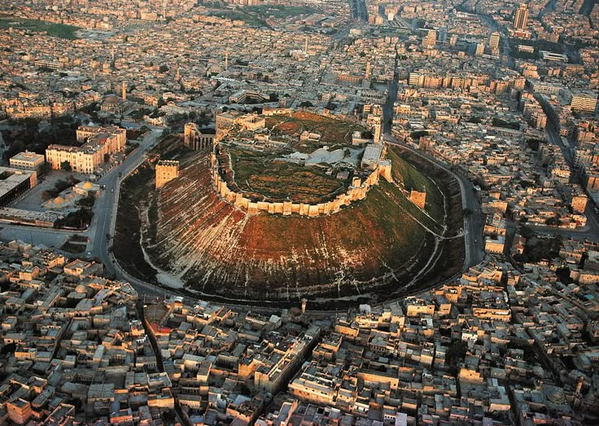

Mirasımız: Halep Kalesi
Suriye'nin kalbinde yükselen tarihi bir yapı
Hakkında
Halep Kalesi, Orta Doğu'nun en eski ve en büyük kalelerinden biridir. Binlerce yıllık bir geçmişe sahip olup birçok medeniyete ev sahipliği yapmıştır.
Tarihçesi
- MÖ 3. yüzyıl: Kale ilk kez inşa edildi.
- İslam Dönemi: Emeviler ve Abbâsîler tarafından genişletildi.
- Haçlı Seferleri: Savaşlar sırasında savunma amaçlı kullanıldı.
- Günümüz: Restorasyonlarla ayakta tutulmakta ve turistik alan olarak hizmet vermektedir.
Mimari
Kale, yüksek bir tepe üzerine kurulmuştur. İçerisinde cami, saray, su sarnıçları ve askeri yapılar yer alır. Taş işçiliği oldukça etkileyicidir.
Kültürel Önemi
UNESCO Dünya Mirası geçici listesinde yer almakta olup Suriye'nin kültürel zenginliğini temsil eden önemli bir yapıdır.
Konum Planı

"Halep Kalesi, yeryüzünde gördüğüm en güçlü yapılardan biridir." – İbn Battuta